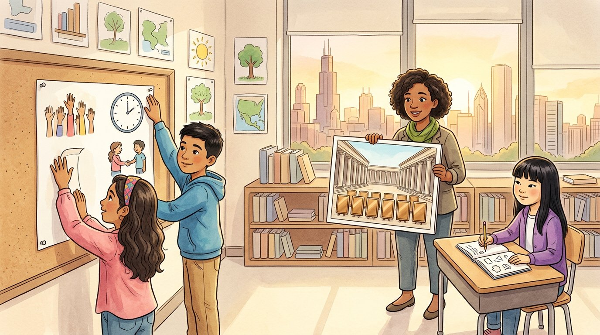

Grade 6 · Social studies · SS.6-8.CV.2.LC
Rules on the wall
A story about classroom rules and the Twelve Tables, the first written laws of Rome.
Reglas en la pared. Un cuento sobre las reglas del salón y las Doce Tablas, las primeras leyes escritas de Roma.
Key words you will learn
Tap a green word to see what it means.
Toca una palabra verde para ver qué significa. Con la ayuda activada, verás también la definición en español.
The story
El cuento está en inglés. Pulsa «Listen to the story» para escucharlo y toca las palabras verdes cuando no entiendas una.
"That's not fair!" shouted Israel. Selena had taken the last basketball at recess, and Israel said the rule was that sixth graders took turns. "What rule?" said Selena. "I never heard of that rule." Ms. Haddad looked at both of them. "Where is that rule written?" Nobody knew.
"You two just found a problem the Romans had about 2,500 years ago," said Ms. Haddad. "Rome had become a . Instead of a king, citizens chose leaders. But Romans were divided into two groups." "The were rich, old families who held most of the power. The were ordinary people: farmers, bakers and workers."
"Back then, the laws weren't written down for everyone to see," she went on. "Patrician judges kept the laws in their heads. When a plebeian went to court, the judge could say the law was whatever he wanted it to be. Plebeians couldn't check." Israel nodded. "Like Selena's rule." "Like my rule?" said Selena. "Like your rule," said Israel.
"The plebeians got angry," said Ms. Haddad. "They refused to work and even walked out of the city. Finally, around 450 BCE, the Romans wrote their laws on twelve bronze tablets." "They called them the Twelve Tables, and they set them up in the Forum, the main square, so that anyone who could read could see the , or ask someone to read it to them."
Sophia raised her hand. "What did the laws say?" "Lots of everyday things," said Ms. Haddad. "What happened if your neighbor's tree hung over your land, how to pay back a debt, and how a trial worked. They also said how a person could be called to court, and that a trial had to follow the same steps for everyone. The Twelve Tables were Rome's first written ."
"Were the laws fair?" asked Selena. "Some of them seem very harsh to us today," said Ms. Haddad. "But writing them down was a big step. When laws are written, everyone can know their , and they can point to the written rule to challenge an unfair decision. It's also harder for powerful people to change the rules whenever they want."
"Does the United States have something like that?" asked Israel. Ms. Haddad pointed to the poster of the Constitution in the corner. "Our Constitution is written down too. It says how the government works, what its limits are, and what rights the people have. Romans called their tablets the source of all law. Many Americans feel that way about the Constitution."
That afternoon, the class wrote its own rules on a poster: take turns with the basketball, listen when someone speaks, and help a classmate who is stuck. Everyone signed it. Selena signed first. Then she handed Israel the basketball. "Your turn," she said. "It's written."
Pause to connect
Visual arts · VA:Cn11.1.6
Look at the Pont du Gard, a Roman aqueduct bridge in what is now southern France. The Romans built it about 2,000 years ago to carry water to the city of Nîmes.
Observa el Pont du Gard, un puente acueducto romano en lo que hoy es el sur de Francia. Los romanos lo construyeron hace unos 2,000 años para llevar agua a la ciudad de Nimes.
See the Pont du Gard (UNESCO World Heritage) (opens in a new tab)
What you will see: A huge stone bridge crosses a river valley. It has three levels of arches, one on top of the other: big arches at the bottom and many small arches at the top. The water flowed in a channel at the very top, almost 50 meters above the river.
Lo que verás: Un enorme puente de piedra cruza el valle de un río. Tiene tres pisos de arcos, uno encima del otro: arcos grandes abajo y muchos arcos pequeños arriba. El agua corría por un canal en la parte más alta, a casi 50 metros sobre el río.
- Why do you think the builders used arches instead of a solid wall?¿Por qué crees que los constructores usaron arcos en lugar de un muro macizo?
- A government had to plan and pay for this bridge. What does it tell you about the Roman government and what it wanted people to think?Un gobierno tuvo que planear y pagar este puente. ¿Qué te dice sobre el gobierno romano y lo que quería que la gente pensara?
Think about it, then answer in your notebook or talk it over with someone at home.
Check your thinking
Arches are strong: they push the weight down and out into the pillars, so the bridge can be tall while using less stone, and the river can flow through. A project this big needed planning, money, laws and many workers, so it shows that Rome had a strong, organized government. It is also beautiful, which told people that Rome was powerful and took care of its cities.
Glossary
- law
- A rule that everyone in a community must follow, made by the government.
- ley: Una regla que todos en una comunidad deben seguir, hecha por el gobierno.
- republic
- A government in which citizens choose leaders to make decisions for them, instead of a king.
- república: Un gobierno en el que los ciudadanos eligen líderes que deciden por ellos, en lugar de un rey.
- patricians
- In ancient Rome, the rich and powerful families who held most of the power.
- patricios: En la antigua Roma, las familias ricas y poderosas que tenían casi todo el poder.
- plebeians
- In ancient Rome, the ordinary citizens, like farmers, shopkeepers and workers.
- plebeyos: En la antigua Roma, los ciudadanos comunes, como campesinos, comerciantes y trabajadores.
- code of laws
- A written list of a community's laws, organized so that people can read them.
- código de leyes: Una lista escrita de las leyes de una comunidad, organizada para que la gente pueda leerla.
- rights
- Freedoms and protections that belong to people, which others must respect.
- derechos: Libertades y protecciones que tienen las personas y que los demás deben respetar.
Questions
Choose the correct answer. If you make a mistake, the story shows you where the answer is.
Elige la respuesta correcta. Si te equivocas, el cuento te muestra dónde está la respuesta.
-
Question A. Who were the patricians and the plebeians?
¿Quiénes eran los patricios y los plebeyos?
The patricians were rich, old families with most of the power, and the plebeians were ordinary people.
-
Question B. What was the problem with laws that were not written down?
¿Cuál era el problema con las leyes que no estaban escritas?
Patrician judges kept the laws in their heads, so they could say the law was whatever they wanted, and plebeians couldn't check.
-
Question C. Why did the Romans put the Twelve Tables in the Forum?
¿Por qué los romanos pusieron las Doce Tablas en el Foro?
They set up the tablets in the main square so that anyone could see the law or ask someone to read it.
-
Question D. What did the Twelve Tables say about trials?
¿Qué decían las Doce Tablas sobre los juicios?
The Twelve Tables said how a person could be called to court, and that a trial had to follow the same steps for everyone.
-
Question E. Why was writing the laws down a big step?
¿Por qué escribir las leyes fue un gran paso?
When laws are written, everyone can know their rights, and people can use the written rules to challenge unfair decisions.
Challenge: explain your thinking
Explain the purpose
Explain two purposes of a written code of laws, using the Twelve Tables as an example. Then explain how your class poster has the same purposes.
Explica el propósito. Explica dos propósitos de un código de leyes escrito, usando como ejemplo las Doce Tablas. Después explica cómo el cartel de la clase tiene los mismos propósitos.
Answer in your notebook or talk it over with a classmate. Use evidence from the story.
Responde en tu cuaderno o coméntalo con un compañero. Usa evidencia del cuento.
Check your thinking
Purpose 1: so everyone can know the rules and their rights, like plebeians reading the tablets in the Forum. Purpose 2: so people can challenge unfair decisions, and it is harder for powerful people to change the rules whenever they want, as patrician judges did. The class poster does the same: everyone can see the basketball rule, and nobody can say "I never heard of that rule."
Go further
Some laws of the Twelve Tables seem harsh to us today. Can a law be written down and still be unfair? Explain, and say what people can do when a written law is unfair.
Para ir más lejos. Algunas leyes de las Doce Tablas nos parecen duras hoy. ¿Puede una ley estar escrita y aun así ser injusta? Explica y di qué puede hacer la gente cuando una ley escrita es injusta.
Check your thinking
Yes: writing a law makes it public, but it does not make it fair. For example, one of the Twelve Tables did not allow patricians and plebeians to marry each other. In a republic, people can work to change unfair laws by speaking up, voting, protesting peacefully and electing new leaders. The plebeians themselves kept pushing for more rights after the Twelve Tables. The United States Constitution also has a way to change it: amendments.